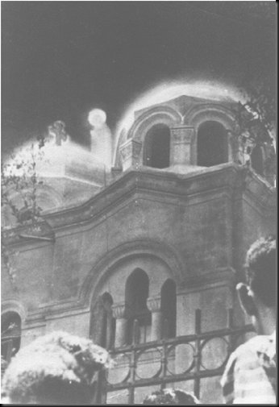
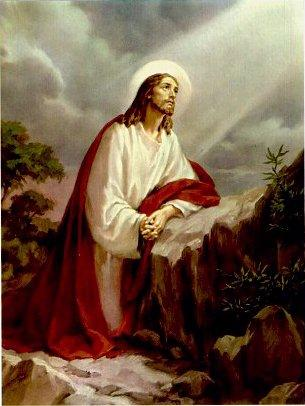

“ANTECEDENTES E FATOS”
PRELÚDIO
Foi
uma quantidade notável de Aparições da SANTÍSSIMA VIRGEM MARIA que aconteceram
em Zeitoun, um Distrito do Cairo, no Egito, durante 24 meses a partir de 
A VIRGEM MARIA apareceu na parte superior de uma Igreja Copta Ortodoxa dedicada a ELA MESMA, a “SANTÍSSIMA MÃE DE JESUS” , em recordação do passado, quando por aquela região viveu a SAGRADA FAMÍLIA. Ali, na cobertura da Igreja, ELA se deslocava em todas as direções, circulando entre as cinco cúpulas de cobertura do Templo, 4 menores e uma maior no centro, a cúpula principal que possui uma Cruz, recordando a Redenção da Humanidade feita por JESUS.
Em Roma, nessa mesma época as autoridades da Igreja discutiam no Concílio Vaticano II, o “desejo de existir a mesma fé” na humanidade, havendo diversas propostas em beneficio de todos os cristãos, e também diversos estudos, com o objetivo de seguir e fazer evoluir os contatos com o mundo religioso, objetivando promover a “união na fé” em todas as Igrejas.
A EVOLUÇÃO RELIGIOSA NO EGITO
Os cristãos egípcios, foram constituídos pelos seus ancestrais que abraçaram o cristianismo no século I. Os primeiros cristãos no Egito eram principalmente judeus vindos da Alexandria, como por exemplo Teófilo, a quem São Lucas dirige palavras no capítulo introdutório do seu "Evangelho segundo Lucas". Quando a Igreja foi fundada, durante a época do Imperador Romano Cláudio, um grande número de egípcios, abraçou a fé cristã. O Cristianismo se espalhou pelo Egito em poucas décadas, tal como se pode verificar nos escritos do Novo Testamento encontrados em Bahnasa, no Egito Médio, e que data aproximadamente do ano 200.

No século VII, depois da invasão Árabe e das abomináveis e forçadas campanhas de conversão empreendidas pelo Islã, obrigando o povo a seguir e professar a religião muçulmana, aconteceu uma diminuição considerável do número de cristãos. Por outro lado, a maior parte da população egípcia se converteu ao Islã. Os Coptas se tornaram os infiéis egípcios e os cristãos em diminuta quantidade, passaram a ser denominados de COPTAS CATÓLICOS.
Por essa razão, a Igreja egípcia é chamada de “anti-Calcedoniana” ou simplesmente “Copta ou Coptas Ortodoxos”. Hoje a maioria dos cristãos egípcios é formada pelos Coptas Católicos, que atingem um máximo de 50.000 pessoas. A Bíblia da religião muçulmana o “Corão”numa de suas cláusulas sobre a fidelidade dos fiéis, pune com a morte, as pessoas que deixarem o Islã e se converterem a outra fé, principalmente se a mudança for para a “fé cristã”.
Assim sendo, além dos Coptas Católicos, na distribuição atual dos religiosos no Egito, há os Cristãos Copta Ortodoxos com aproximadamente 5 milhões de fiéis e os Muçulmanos Egípcios que chegam a 25 milhões de membros.
LEIA E
CONFIRME A VERDADE...
Ali no Egito, no Distrito de Zeitoun, naquela Praça ao lado da Igreja Copta Ortodoxa onde estavam reunidos pessoas de todas as religiões e algumas sem qualquer religião, não terá querido significar que também ELA, a “MÃE DE JESUS, a MÃE DE DEUS” , no “SEU carinhoso silêncio”, SE movimentando entre as cúpulas de cobertura do Templo, acenando e sorrindo para o povo, não estava revelando concordar com a insistente preocupação ecumênica do Vaticano II? E também, a nossa querida e amada MÃE SANTÍSSIMA, não terá cultivado o SEU precioso silêncio, não falando qualquer palavra, mantendo vigorosamente o SEU encantador sorriso maternal, com aquela amorosa delicadeza de SEUS gestos,“para confirmar veementemente” que “os povos” não podem sonhar em se unir numa única “Fé”, reunindo as pessoas das diversas religiões num único CREDO,“sem a SUA Maternal Intercessão?”
Isto porque, o real e verdadeiro reconhecimento materno da SANTÍSSIMA VIRGEM MARIA pelas nações do mundo, sempre foi livre, e assim, o devido e responsável culto aos SEUS DIVINOS privilégios de MÃE DE DEUS, não são e nunca foram empecilhos ao Ecumenismo. Por isso mesmo, em tempo algum a humanidade poderá sonhar com a possibilidade de acontecer a “União dos Povos na Mesma Fé”, enquanto todas as pessoas, não erguer um autêntico, sólido e imprescindível “Altar Mariano” no interior do próprio coração com a concreta intenção:“TUDO A JESUS POR MARIA”. Pensem nesta REAL possibilidade.
FUGA DA SAGRADA FAMÍLIA PARA O EGITO
Lembrando-nos do passado, recordamos aquele acontecimento inesquecível ocorrido com a SAGRADA FAMÍLIA, logo após o nascimento do MENINO JESUS em Belém, no tempo do Rei Herodes. Conforme conhecemos pelas Sagradas Escrituras, os reis magos vieram do Oriente a Jerusalém, perguntando: “Onde está o rei dos judeus, nascido há pouco tempo? Pois vimos a estrela no Oriente e viemos adorá-lo”. (Mt 2, 2) O Rei Herodes vaidoso e de índole má, convocou os sumo-sacerdotes e ficou sabendo que pelas Sagradas Escrituras, o Menino DEUS devia nascer em Belém. Então, ordenou que chamassem os reis magos e lhes ensinou o caminho para Belém recomendando: “Ide e procurai obter informações exatas a respeito do Menino e, quando regressarem me avisem sobre o local, pois eu também quero adorá-lo”. (Mt 2, 8)
 Verdadeiramente a intenção de
Herodes era matar o MENINO JESUS, porque seu orgulho dizia: “Rei somente sou eu; não quero nenhum concorrente”.
Verdadeiramente a intenção de
Herodes era matar o MENINO JESUS, porque seu orgulho dizia: “Rei somente sou eu; não quero nenhum concorrente”.
Os Magos visitaram JESUS, lhes trouxeram presentes e o adoraram. “Avisados em sonho que não voltassem a Herodes, regressaram ao Oriente por outro caminho”. (Mt 2, 12) No mesmo dia, o Anjo do SENHOR avisou a José em sonho, ordenando que fugisse: “Levanta-te, toma o Menino e a MÃE e foge para o Egito. Fica lá até que eu te avise, porque Herodes vai procurar o Menino JESUS para o matar”. (Mt 2, 13) E a Sagrada Família fugiu para o Egito.
Embora a população do Cairo (Capital do Egito) seja muçulmana, existe uma minoria copta na cidade e também em todo o Egito, que pelas doutrinas, estão bem próximos dos cristãos. Nos tempos antigos, situado a 10 quilômetros da cidade do Cairo, nasceu e cresceu Heliópolis, palavra grega que significa “Cidade do Sol”. A região de Heliópolis com o progresso se uniu a cidade do Cairo como Distrito. Da mesma maneira aconteceu do outro lado da cidade do Cairo, onde se formou um progressivo Distrito denominado: “Zeitoun” . Segundo a tradição cristã, quando a Sagrada Família fugiu para o Egito a fim de escapar das tentativas de Herodes em querer matar JESUS recém-nascido, vieram justamente para a região que se tornou o distrito de Zeitoun, ligado ao Cairo, e ali a Sagrada Família se instalou.
Outrora construíram ali um Santuário conhecido como “Igreja de Santa Maria, dedicada a SANTÍSSIMA VIRGEM MARIA” que foi danificado pelo tempo e reconstruído várias vezes, com a intenção de ser mantido naquele local em atividade, porque era a lembrança de onde a Sagrada Família encontrou abrigo. Entretanto, houve um tempo em que a manutenção do prédio não tendo sido adequada, o Santuário da MÃE SANTÍSSIMA desapareceu quase que completamente. Em 1925, um membro da família Khalil, proprietária do terreno, teve uma “revelação em sonho” que a MÃE DE DEUS apareceria durante um ano na “Igreja que ali fosse construída”. A família então doou o terreno a Diocese Copta que logo providenciou a construção da “Nova Igreja Copta de SANTA MARIA” em homenagem a MÃE DE DEUS. Os anos passaram... Os mais antigos às vezes comentavam lembrando daquele acontecimento, e verdadeiramente tinham uma grande esperança, de um dia a “SANTÍSSIMA VIRGEM MARIA visitasse aquela IGREJA”. O novo Templo ficou pronto em 1925, e foi consagrado pelo Bispo de Beni Suef, senhor Athanasious, a “NOSSA SENHORA, SANTA MARIA”. Ela não é uma Igreja Católica, é uma Igreja Copta Ortodoxa, dedicada a MARIA, MÃE DE JESUS. No ano 1968, exatamente 43 anos depois daquela “revelação em sonho feita a família Khalil”, "NOSSA SENHORA, MÃE DE DEUS", transformou em realidade o tão esperado sonho.